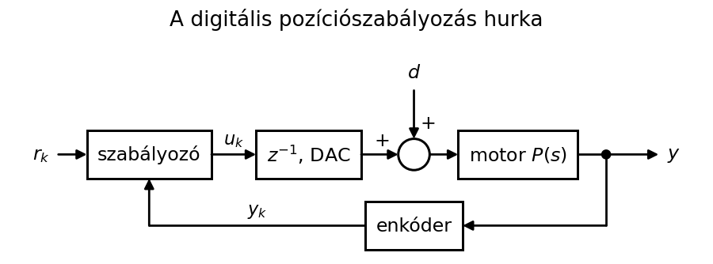
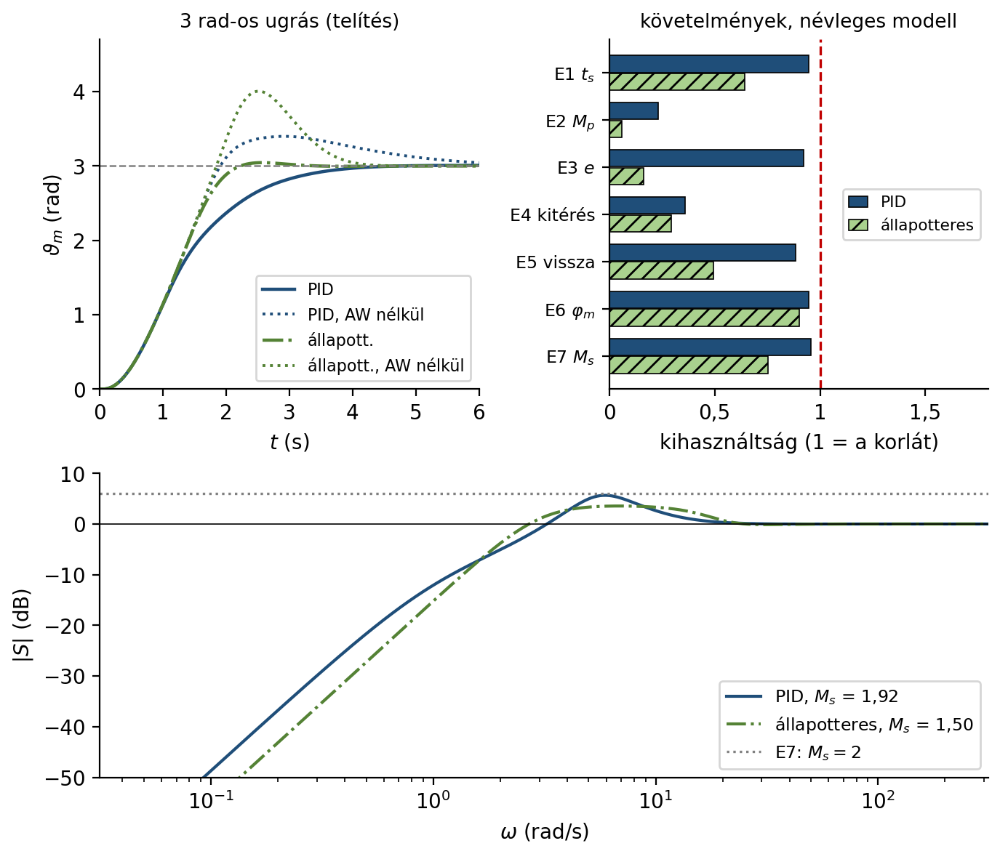
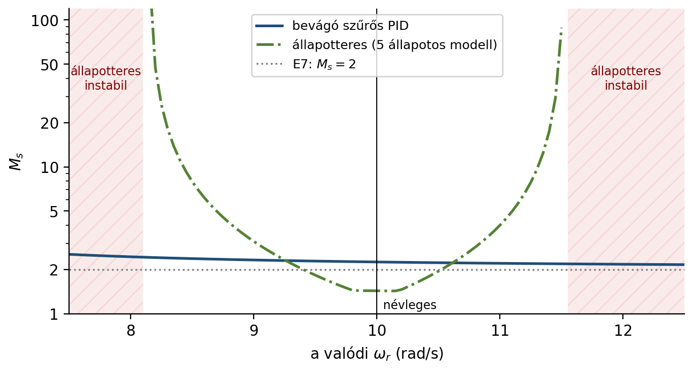

„A motor tengelye álljon be a kért szögre, gyorsan, pontosan, és maradjon is ott.” Egy robotcsukló, egy kamera forgatóasztala vagy egy szelepmozgató ennyit vár. A mondat mögött azonban egy sor döntés van: mit jelent a „gyorsan”, mennyi feszültség áll rendelkezésre, milyen finom az érzékelő, mi történik, ha terhelés éri a tengelyt, és mi, ha a tengely nem merev.
Ebben a záróprojektben egyetlen tervezési ciklust viszünk végig: követelmény, modell, két különböző terv, digitális megvalósítás, kiértékelés azonos feltételekkel, jegyzőkönyv. Új módszert alig vezetünk be; a korábbi alfejezetek eszközeit kapcsoljuk össze, és megnézzük, hol ütköznek egymással.
Mielőtt tovább olvasol, írd le egy lapra, mit várnál: a frekvenciatartományban tervezett PID vagy a modellre épülő állapotteres szabályozó lesz-e gyorsabb? És melyik bírja jobban, ha a valóság eltér a modelltől? A fejezet végén vesd össze a tippedet a számokkal.

A diagramon három olyan elem látszik, amely a folytonos idejű tervből hiányzik: a számítás miatti egymintás késleltetés (), a beavatkozó véges felbontása (DAC vagy PWM) és az enkóder, amely csak egész lépéseket lát. A bemeneti zavar a terhelőnyomatékot helyettesíti, feszültségben kifejezve. Az interaktív ábrán a teljes hurkot szimulálhatod, mindkét tervvel egyszerre.
A követelmények kitalált, didaktikai értékek, de egy valós feladatban is ilyen táblázattal kezdenénk. Mindegyik sor egy kérdésre válaszol: E1–E2 a használó élményére, E3 a pontosságra, E4–E5 a terheléssel szembeni merevségre, E6–E7 pedig arra, mennyi modellhibát bír el a hurok. Egy követelmény akkor jó, ha mérhető, és megmondja a mérés körülményeit is (mekkora ugrás, melyik időablak). Fontos, hogy a tervezés előtt rögzítsük őket: utólag mindig találni olyan mércét, amelyen a kedvenc tervünk nyer.
| Jel | Követelmény | Korlát |
|---|---|---|
| E1 | rad ugrás beállási ideje () | s |
| E2 | túllövés | |
| E3 | maradó hiba (a zavar előtti utolsó 1 s-ban) | enkóderlépés rad |
| E4 | V bemeneti zavar: legnagyobb kitérés | rad |
| E5 | ugyanott visszaállás rad-on belülre | s |
| E6 | diszkrét hurok fázistartaléka | |
| E7 |
Adottság: V, 2000 enkóderlépés fordulatonként, 12 bites beavatkozó, ms, egy minta számítási késleltetés.
A modell a Villamos és elektromechanikus rendszerek: a DC-motor alfejezetből ismert, állapota , pozícióátvitele
pólusai , és . Figyelem: ennél a motornál a villamos időállandó s lassabb, mint a mechanikai s. Az induktivitást tehát nem szabad „kicsinek” nyilvánítani; mindvégig a harmadrendű modellel dolgozunk.
Az érzékelő felbontása mrad, a 12 bites, V-os beavatkozó lépése mV. A kvantálási hibát mrad szórású zajnak tekintjük (Kvantálás, fixpontos aritmetika és szűrés); ez csak közelítés, mert álló tengelynél a hiba nem véletlen.
A követelményekből előre látszik, hol lesz feszültség. A zavarelnyomáshoz (E4, E5) nagy alacsonyfrekvenciás hurokerősítés és integrátor kell; a robusztussághoz (E6, E7) viszont a vágási frekvencia körül nem szabad sok fázist elveszíteni, márpedig az integrátor, a késleltetés és a szűrés mind fázist visz el. Az érzékelő zaja pedig a nagyfrekvenciás erősítésen keresztül jut a feszültségre: a beavatkozó jelet is eredményként kell nézni.
A Fázisemelő (lead) kompenzátor eljárását követjük, de az integrátor miatt nagyobb tartalékkal indulunk. A cél rad/s, a lead taggal . Ehhez a tag után integráló tényező jön. A szorzat pontosan egy szűrt PID. Hozzuk közös nevezőre a párhuzamos alakot:
A lead–integrátor számlálója . Az együtthatókat mellett egyenlővé téve:
Így a frekvenciatartományban tervezett kompenzátor a Digitális PID-algoritmus DiscretePID
osztályával valósítható meg, antiwindupostul. A deriválás a mért jelre
hat
(),
az arányos tagban az alapjel súlya
.
Miért kell a lead tagtól , ha a követelmény csak ? Mert a következő lépések tartalékot fogyasztanak: az integrátor -nél kb. -ot, a mintavétel és a késleltetés további -ot. Ha a terv elején nem hagyunk ráhagyást, a végén kell visszalépni.
Az és hangolása iteráció volt, és ezt a jegyzőkönyv is tartalmazza: -gyel a túllövés ; , mellett a maradó hiba mrad (E3 nem teljesül); a végleges , minden követelményt teljesít.
Csak a szöget mérjük, ezért megfigyelő kell. A Diszkrét állapottér és diszkrét tervezés mintájára a ZOH-modellt bővítjük a függőben lévő paranccsal (késleltetés) és az integráló állapottal:
A erősítést diszkrét LQR adja (Az optimális szabályozási feladat és az LQR, Bryson-súlyokkal): rad, rad·s, referenciafeszültség V. A szabályozó
ahol () az alapjel közvetlen útja, a PID súlyának párja. A becslést a mérés utáni (current) korrekcióval kapjuk, a megfigyelő erősítése a A Kálmán-szűrő mint optimális megfigyelő: dualitás szerinti állandósult Kálmán-erősítés ( V feszültségzaj, mérési szórás ). A itt hangolási paraméter, nem mért fizikai zaj.
A súlyok jelentése: csökkentése gyorsabb pozícióhurkot, csökkentése erősebb integrálást és gyorsabb zavarelnyomást kér, a referenciafeszültség növelése pedig „olcsóbbá” teszi a beavatkozást. Az és a együtt a Alapjelkövetés állapotvisszacsatolással: előszűrő és integrátor kétszabadságfokú gondolatát valósítja meg: az alapjel útja hangolható a zavarválasz érintése nélkül. Az állapotteres terv domináns zárt köri pólusai a és körül vannak, a megfigyelő pólusai ( és ) ezeknél gyorsabbak, de nem annyira, hogy a kvantálási zajt felerősítsék.
Mindkét terv ugyanebben a sorrendben fut minden mintavételkor: (1) az előzőleg kiszámított parancs kiadása, (2) mérés, (3) az új parancs számítása, (4) az állapotok léptetése a telített értékkel.
A kiértékeléshez minden futásnak ugyanazt a forgatókönyvet adjuk: rögzített alapjelugrás, rögzített zavar rögzített időben, ugyanaz a hardvermodell. Így két terv különbsége valóban a szabályozóból ered. A tartalékokat a lineáris, mintavett hurokból számoljuk (a bemenetnél felvágva, a késleltetéssel együtt), mert a telítés és a kvantálás nemlineáris, azok hatását az időtartománybeli futás mutatja meg.
Ellenőrzés: az integráló tényező -nél -ot vesz el, tehát folytonos tartalék marad; a ZOH és a késleltetés -a után körül várjuk. Az első parancs V, bőven a korlát alatt.
A controlkit.projects modul tartja egy helyen a
követelményeket, a hardvert és a forgatókönyveket. Minden terv ugyanazt
a motort, késleltetést, enkódert és zavart kapja, és minden futáshoz új
szabályozópéldány készül.
from controlkit import projects as pj
d = pj.reference_motor_pid()
print(f"lead: K = {d.K}, T = {d.T}, alpha = {d.alpha}, w_i = {d.wi}, b = {d.b}")
print(f"PID : Kp = {d.Kp:.2f}, Ki = {d.Ki:.2f}, Kd = {d.Kd:.2f}, Tf = {d.Tf:.4f}")
s = pj.reference_motor_sf()
print("LQI : Kx =", s.Kx.round(2), f"Ku = {s.Ku:.4f}, KI = {s.Ki:.2f}, Nr = {s.Nr:.2f}")
print("megfigyelő: Kf =", s.Kf.round(3))lead: K = 30.2, T = 0.798, alpha = 0.0981, w_i = 0.9, b = 0.55
PID : Kp = 49.76, Ki = 27.18, Kd = 20.20, Tf = 0.0783
LQI : Kx = [95.31 8.51 2.11] Ku = 0.0418, KI = -88.14, Nr = 28.59
megfigyelő: Kf = [ 0.239 3.261 46.401]A motor_report lefuttatja a két forgatókönyvet
(ugras:
rad, majd
s-nál
V zavar; nagy:
rad zavar nélkül), és kiszámolja a diszkrét hurok tartalékait.
rep = pj.motor_report()
print(" t_s Mp e_vég zavar vissza rip PM Ms nagy: Mp t_s")
for name, r in rep.items():
a, g, L = r["ugras"], r["nagy"], r["hurok"]
print(f"{name:10s} {a['ts']:5.2f} {a['Mp']:5.1f} {1000 * a['e_final']:5.1f}m "
f"{a['dist_peak']:6.3f} {a['dist_rec']:6.2f} {a['ripple']:5.3f} {L.pm:5.1f} "
f"{L.Ms:5.2f} {g['Mp']:8.1f} {g['ts']:5.2f}")
for name, r in rep.items():
ok = all(row[3] for row in pj.motor_checklist(r["ugras"], r["hurok"]))
print(name, "minden követelmény teljesül:", ok) t_s Mp e_vég zavar vissza rip PM Ms nagy: Mp t_s
PID 2.37 1.2 5.8m 0.036 3.10 0.197 42.3 1.92 0.3 3.67
LQG 1.61 0.3 1.0m 0.029 1.73 0.008 44.4 1.50 1.5 2.09
PID minden követelmény teljesül: True
LQG minden követelmény teljesül: True(Az LQG címke az állapotteres tervet jelöli: kvadratikus
optimális visszacsatolás Kálmán- megfigyelővel. A rip a
parancsfeszültség szórása a zavar előtti utolsó másodpercben,
voltban.)

Az állapotteres terv minden rögzített jellemzőben legalább olyan jó:
gyorsabb, kisebb az
-e,
és a kvantálási zajt is jobban simítja, mert a sebességet a modell
segítségével becsli, nem szűrt differenciából. Ez nem a módszer
„törvénye”: a két tervet nem azonos sávszélesség-kereséssel hangoltuk,
és az állapotteres terv több modellismeretet használ. Nézzük meg, mi
történik, ha a modell téved. A robust modul motorcsaládján
(
–-szörös,
–-szörös,
–-szörös,
eset, Modellbizonytalanság, robusztus stabilitás és
H∞-ízelítő):
for name, make in pj.motor_designs().items():
f = pj.motor_robustness(make)
on = pj.motor_metrics(pj.simulate_motor(make(), pj.motor_scenarios()["nagy"]))
off = pj.motor_metrics(pj.simulate_motor(make(antiwindup=False),
pj.motor_scenarios()["nagy"]))
print(f"{name}: stabil {f['n_stable']}/{f['n']}, max Mp {f['Mp']:.1f} %, max t_s "
f"{f['ts']:.2f} s, max Ms {f['Ms']:.2f}, min PM {f['pm']:.0f}°")
print(f" 3 rad ugrás: Mp {on['Mp']:.1f} % antiwinduppal, {off['Mp']:.1f} % nélküle")PID: stabil 27/27, max Mp 2.8 %, max t_s 4.39 s, max Ms 3.28, min PM 22°
3 rad ugrás: Mp 0.3 % antiwinduppal, 13.3 % nélküle
LQG: stabil 27/27, max Mp 6.4 %, max t_s 2.73 s, max Ms 2.20, min PM 29°
3 rad ugrás: Mp 1.5 % antiwinduppal, 33.5 % nélküleMind a 27 eset stabil, de a névleges követelmények a legrosszabb esetben ( nagy, kicsi) sérülnek: a PID-nél. Ha E7-nek a teljes tartományon is teljesülnie kell, kisebb vagy terhelésfüggő hangolás kell. Az antiwindup mindkét tervnél elengedhetetlen; az állapotteres tervnél a nagyobb integráló erősítés miatt még inkább.
Legyen a tengely rugalmas: a mért szög a motorszög egy rad/s, rezonanciás tagon át (a Hurokformálás (loop shaping) kitalált modellje). A merev modellre készült mindkét terv instabil rajta. Két javítás:
for name, make in pj.motor_designs(True).items():
m = pj.motor_metrics(pj.simulate_motor(make(), plant=pj.motor_plant(wr=10)))
row = []
for wr in (8, 9, 10, 11, 12):
L = pj.motor_loop_metrics(make(), pj.motor_plant(wr=wr))
row.append(f"{wr}: {L.Ms:5.2f}" if L.stable else f"{wr}: inst.")
print(f"{name}: t_s {m['ts']:.2f} s, zavar {m['dist_peak']:.3f} rad")
print(" Ms(w_r) = " + ", ".join(row))PID: t_s 3.68 s, zavar 0.116 rad
Ms(w_r) = 8: 2.44, 9: 2.32, 10: 2.25, 11: 2.20, 12: 2.17
LQG: t_s 3.42 s, zavar 0.063 rad
Ms(w_r) = 8: inst., 9: 3.11, 10: 1.43, 11: 4.01, 12: inst.
Ez a projekt legfontosabb tanulsága: a névleges teljesítmény és a robusztusság külön tulajdonság, és az elsőből a második nem következik. A modellalapú terv a névleges ponton kiváló (, kisebb zavarkitérés, bár E1 és E3 így sem teljesül), de a rezonancia -os hibájára már –, -nál pedig a hurok instabil. A magyarázat: a keskeny, éles rezonanciát aktívan csillapítja a pontos modell alapján, és ha a rezonancia máshol van, a korrekció rossz fázisban érkezik, tehát gerjeszti. A bevágó szűrős PID szerényebb (; E1, E3, E4, E5 és E7 nem teljesül), de a vágási frekvenciája olyan alacsony, hogy és rad/s között alig érzi a rezonancia helyét. Rugalmas rendszernél a merev specifikációt vagy újra kell tárgyalni, vagy jobb szenzor, illetve pontosabb, akár adaptív modell kell.
A jegyzőkönyv a projekt eredménye: egy év múlva is megmondja, mit döntöttünk és miért. A mintát a további záróprojektek is követik.
| Pont | Tartalom |
|---|---|
| 1. Feladat | E1–E7, hardveradatok, rögzített forgatókönyvek |
| 2. Modell | CTMS-paraméterek, harmadrendű modell; , nincs redukció |
| 3. Jelöltek | lead–integrátor PID; integráló LQR + Kálmán |
| 4. Iterációk | : ; : E3 sérül; végleges / |
| 5. Eredmény | mindkettő teljesíti E1–E7-et a névleges modellen |
| 6. Robusztusság | 27/27 stabil; legrosszabb / |
| 7. Rugalmas eset | merev terv instabil; notch-PID robusztus, de lassú; LQG-t hibája elrontja |
| 8. Választás | merev, ismert terhelés: állapotteres; bizonytalan rezonancia: notch-PID |
| 9. Nyitott | súrlódás, holtjáték, mérési adatok, valós hardver: nem vizsgált |
Továbbvitt eredmény. A tervezési jegyzőkönyv mintája: rögzített követelmény → modell → jelöltek → iterációk → azonos forgatókönyvek → robusztusság → választás indoklással → nyitott pontok. Ezt követi a 2. záróprojekt: fordított inga a kocsin, a 3. záróprojekt: drón magasságtartása, a 4. záróprojekt: hőmérséklet-szabályozás identifikációval és a Vegyes vizsgafeladatsor.
Valódi hardveren (opcionális folytatás) a szabályozót csak áramkorláttal, vészleállítóval, véghelyzet-kapcsolóval és felügyelet mellett szabad kipróbálni.
reference_motor_sf(flex=True, ...) súlyaival
(,
,
),
és vizsgáld
–
között.A záróprojekt a DC-motor pozíciószabályozását a követelményektől a digitális kódig vitte végig. A lead–integrátor kompenzátor pontosan szűrt PID-ként valósítható meg; az állapotteres terv integráló diszkrét LQR-ből és Kálmán-megfigyelőből áll. Mindkettő teljesítette a névleges követelményeket (: , illetve ). Antiwindup, valósághű érzékelő és késleltetés nélkül az eredmények félrevezetők. Rugalmas tengelyen a merev tervek instabilak; a bevágó szűrős PID robusztus, a modellalapú LQG a névleges ponton jobb, de a rezonancia hibájára érzékeny. A tervezési jegyzőkönyv mintája (követelmény, modell, jelöltek, iterációk, azonos forgatókönyvek, robusztusság, indokolt választás, nyitott pontok) a többi záróprojekt alapja.
from dataclasses import replace
from controlkit import comp, models
base = pj.reference_motor_pid()
for wc, pm, wi in [(4.0, 64.0, 0.9), (3.0, 60.0, 0.675), (3.0, 64.0, 0.45)]:
L = comp.design_lead_at(models.DCMotor().tf_position(), wc, pm)
Kp, Ki, Kd, Tf = pj.pid_from_lead(L.K, L.T, L.alpha, wi)
des = replace(base, Kp=Kp, Ki=Ki, Kd=Kd, Tf=Tf)
f = pj.motor_robustness(lambda: pj.MotorPID(des))
a = pj.motor_metrics(pj.simulate_motor(pj.MotorPID(des)))
print(f"wc {wc}, PM {pm:.0f}, wi {wi}: max Ms {f['Ms']:.2f}; t_s {a['ts']:.2f} s, "
f"e_vég {1000 * a['e_final']:.1f} mrad, vissza {a['dist_rec']:.2f} s")wc 4.0, PM 64, wi 0.9: max Ms 2.86; t_s 2.51 s, e_vég 7.8 mrad, vissza 3.42 s
wc 3.0, PM 60, wi 0.675: max Ms 3.17; t_s 2.76 s, e_vég 4.9 mrad, vissza 3.99 s
wc 3.0, PM 64, wi 0.45: max Ms 2.57; t_s 4.37 s, e_vég 15.2 mrad, vissza inf sA legrosszabb csökkenthető köré, de csak E1, E3 vagy E5 rovására: a harmadik változatnál az integrátor olyan lassú, hogy a hiba nem tűnik el időben. A egyedüli csökkentése alig segít, mert a legrosszabb esetet a hurokerősítés és a fázis együttes változása adja. Ha a terhelés mérhető vagy becsülhető, az erősítés ütemezése (gain scheduling) a jobb út. 5. Lehetséges út: nagyobb és (lassabb terv).
for th, xi, su in [(0.8, 0.4, 12.0), (1.6, 0.8, 12.0)]:
des = pj.reference_motor_sf(True, theta_max=th, xi_max=xi, u_ref=12 if th < 1 else 6,
sigma_u=su)
Ms = []
for wr in (8.5, 10, 11.5):
L = pj.motor_loop_metrics(pj.MotorSF(des), pj.motor_plant(wr=wr))
Ms.append(round(L.Ms, 2) if L.stable else "inst.")
m = pj.motor_metrics(pj.simulate_motor(pj.MotorSF(des), plant=pj.motor_plant(wr=10)))
print((th, xi, su), "Ms(8,5; 10; 11,5) =", Ms, f"t_s = {m['ts']:.2f} s")(0.8, 0.4, 12.0) Ms(8,5; 10; 11,5) = [7.94, 1.43, 88.61] t_s = 3.42 s
(1.6, 0.8, 12.0) Ms(8,5; 10; 11,5) = [2.24, 1.21, 2.93] t_s = 4.40 sAz óvatosabb terv a -os sávban elfogadhatóbb, de lassabb. Garancia nincs: a sáv szélein túl újra ellenőrizni kell. 6. Kis amplitúdójú szinusz-söprés vagy PRBS gerjesztés a feszültségen, nyílt vagy lassú zárt körben; a szög spektrumából (vagy Legkisebb négyzetek, ARX-modell és gerjesztés) a rezonanciacsúcs helye és csillapítása. Több terhelési helyzetben ismételve kiderül szórása. A gerjesztés amplitúdóját a mechanika határozza meg: rezonancián a kitérés nagy lehet.